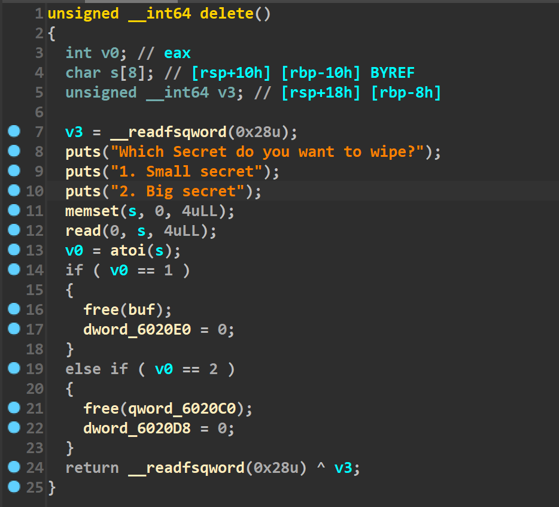

sleepyHolder_hitcon_2016
总结:
通过本题的学习，知道了malloc consolidate函数可以让fast bin的堆块进行合并，然后放到unsorted bin，同时将下一个堆块的prev inuse位置空。通过这一点给了我们利用unlink的机会,如果在2.23下我们可以利用UAF，那么即使没有溢出，也可以利用malloc consolidate让下一个堆块的prev inuse置空，最后在被合并的堆块里伪造一个fake chunk即可触发unlink。
保护策略:
漏洞分析:
存在UAF漏洞，但是这里free后去将一个bss段的值给置空了。而这个值被置空决定了后面的show函数和edit函数没法去利用UAF这个点。
利用思路:
而这道题本身只能申请三种不同大小的堆块，并且每种堆块只能存在一个。
因为三种堆块里两种堆块都比较大，释放掉都能进入unsorted bin，同时没有开PIE保护并且可以篡改函数的got表，因此我们尝试往unlink的方向上考虑。
不过unlink的话我们需要控制堆块的prev inuse位和prev size位，prev size位好说，但是prev inuse位我们通常通过溢出等方式来篡改，而这道题没有溢出仅仅是存在一个被限制的UAF漏洞。
下面我们来说一下如何利用该UAF来完成unlink以及double free。
这个利用的核心就是触发malloc_consolidate函数，将fastbin中的堆块取出来进行合并放到unsorted bin中，同时将下一个堆块的prev inuse位置零。因此我们利用这一点来篡改堆块的prev inuse位，而申请末尾的堆块字节数为8的话，这样就可以控制prev size位了，从而完成unlink的前提。
补充:在glibc2.23中我们申请堆块时，当遍历了fastbin后没有找到需要的堆块，并且需要的堆块大小还位于large bin的范围里(也就是不属于small bin的范围)就会去调用malloc_consolidate函数来整理下零散的堆块碎片。
布局如下:
add 0x28
add 0xFA0delete 0 #此时堆块进入fast bin
add 0x61A80 #因为该堆块非常大，其size属于large bin的范围 于是此时触发malloc consolidate，将fastbin中的堆块放到small bin中
delete 0 #2.23中的针对double free的检测是去判断bins里的第一个地址是否为当前释放的堆块地址，而原本的0号堆块已经进入了small bin中，所以这里可以成功的double free
add 0x28 #将0号堆块申请出来，去往里面写入0x28的数据，此时我们覆盖到下一个堆块的prev size位，而prev inuse位在malloc consolidate的时候就被置为了0，从而完成了unlink前的布局
delete 1#触发unlink
调试过程:
上面的调试过程如下:


之后触发了unlink后，就是一个常规劫持got表的操作，改free函数的got为puts的plt，然后泄露libc，再改free函数的got为system地址。
EXP:
from tools import * |